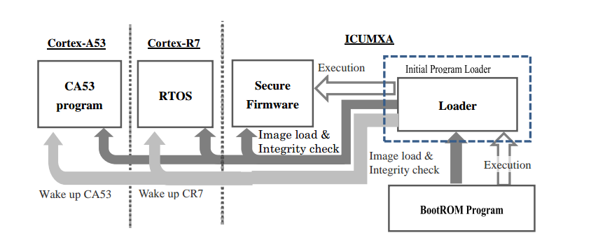
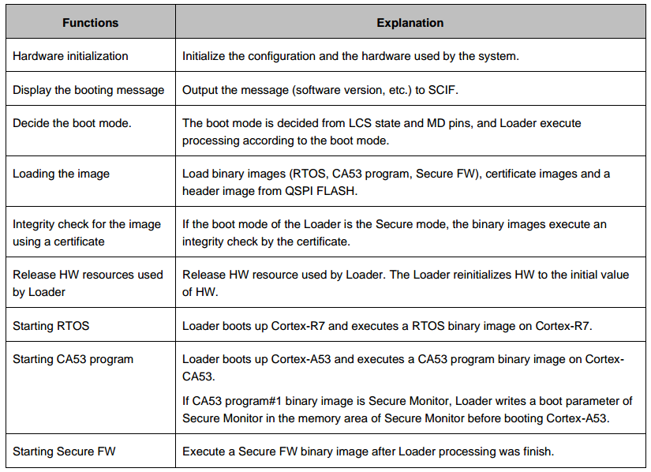
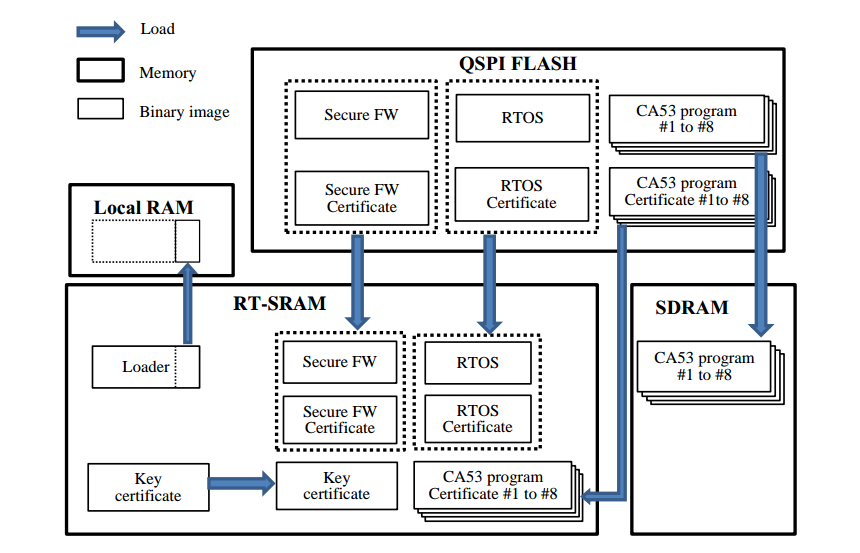
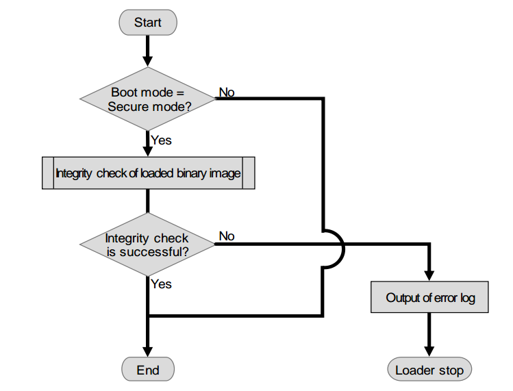
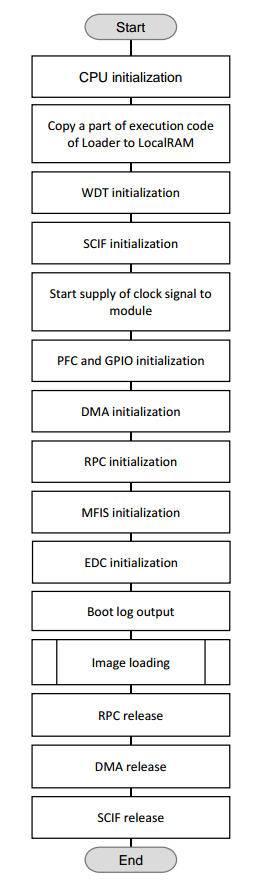
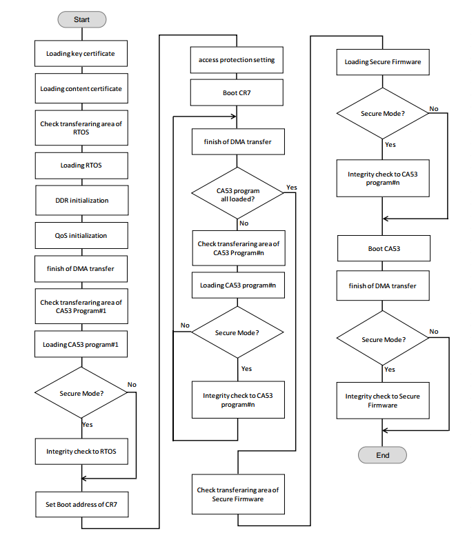
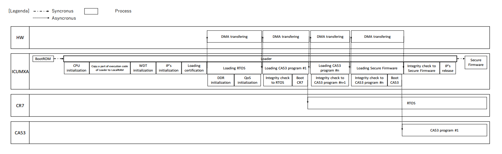
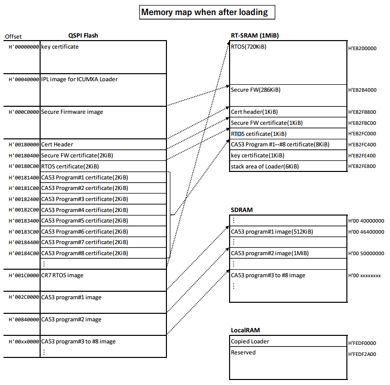
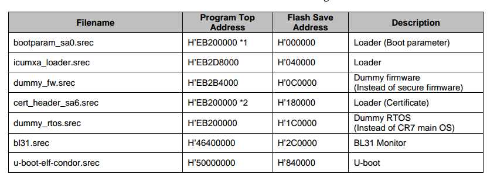

2.8. 多核异构平台系统启动分析
以下内容根据瑞萨V3H架构进行分析
参考文档
2.8.1. IPL启动系统流程
Initial Program Loader简称为IPL

IPL主要完成以下功能

2.8.1.1. load image
IPL流程中主要的一项工作就是将A53以及R7对应的image搬运到SRAM或者DRAM中,然后将其启动.

2.8.1.2. 完整性检查
如果IPL启动模式设置为security mode则在启动R7或者A53的过程中会利用证书文件对image的完整性进行检查.

2.8.1.3. IPL flow
flow of loader process

flow of load image

Sequence of Loader

2.8.2. memory layout

release image and memory address
